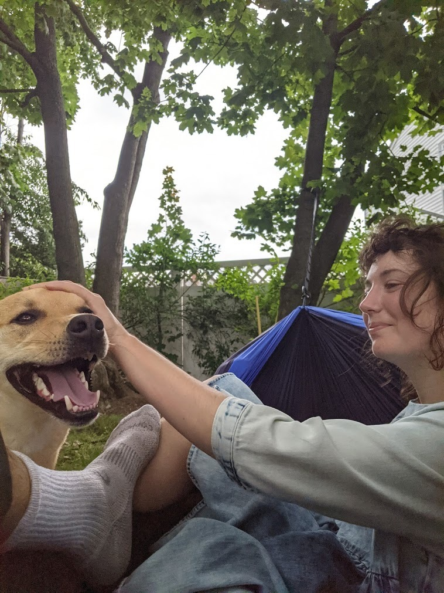
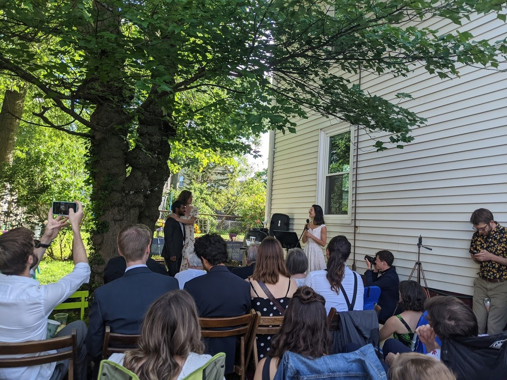
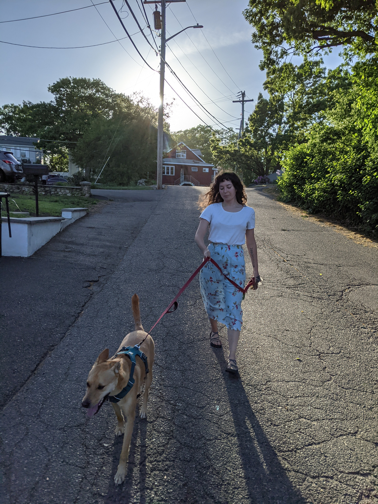
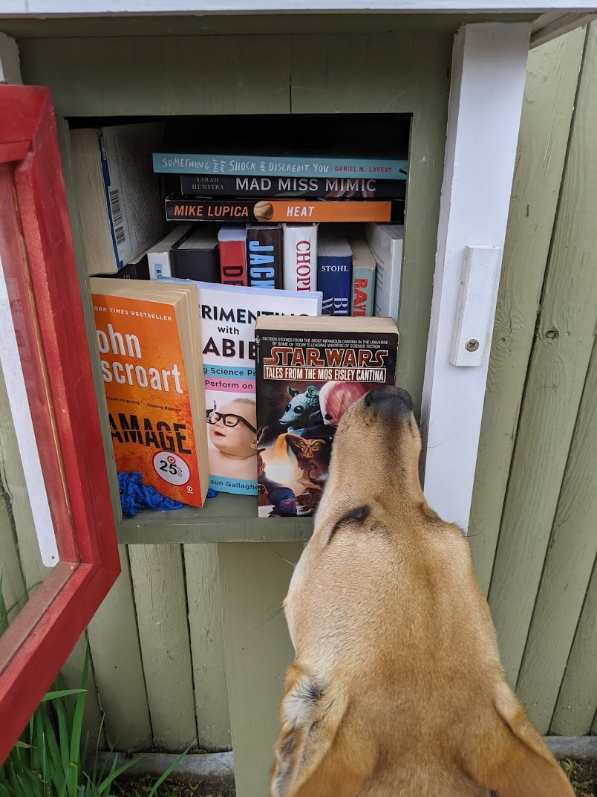
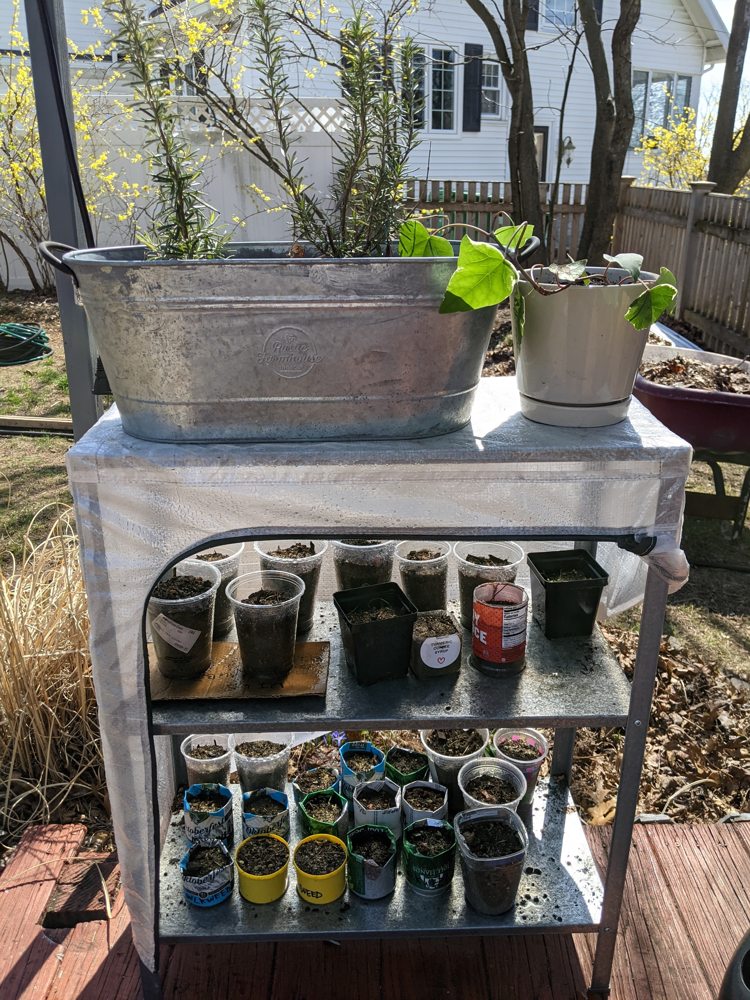
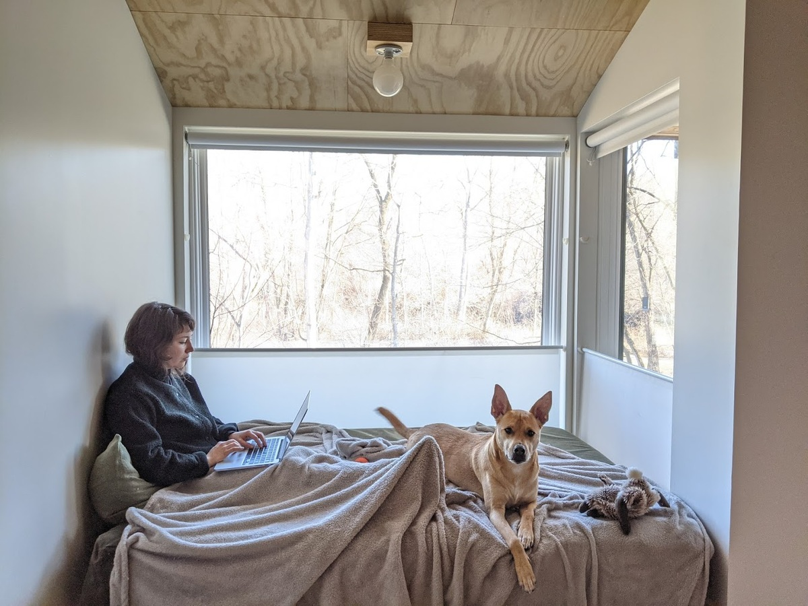
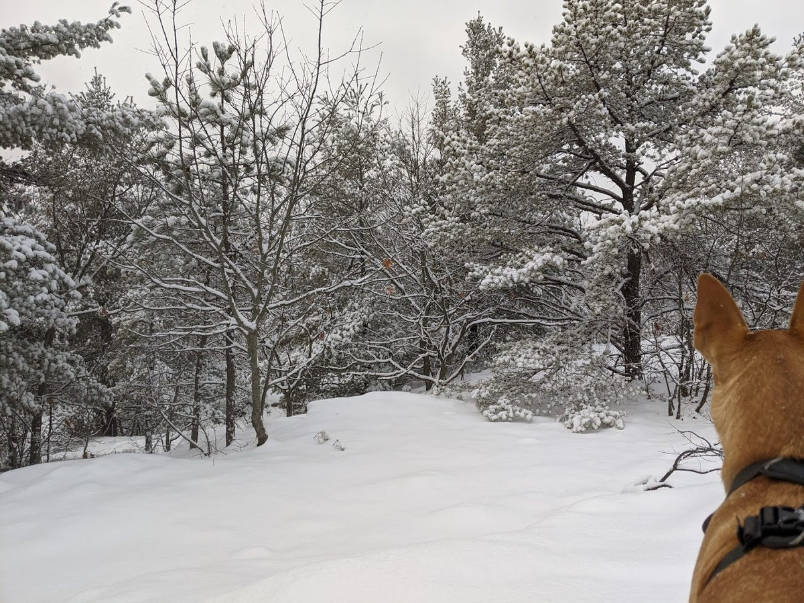
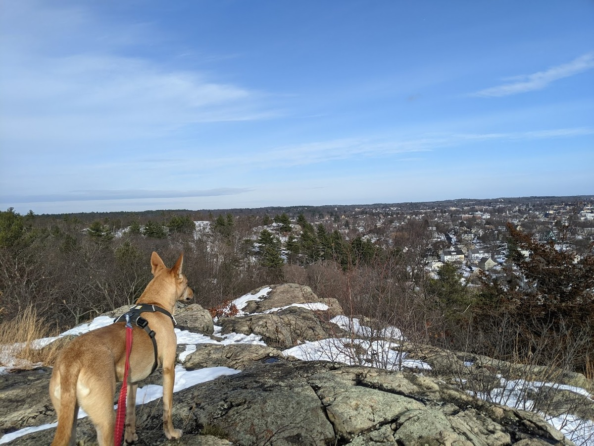

Photo Jrnl

Enjoying my birthday in a new hammock; 2021-06-26
 Officemate;
Officemate;  Alejandra and Dax;
Alejandra and Dax;

Sugar pea harvest; 2021-06-16
Sondra and Jay are married; 2021-06-16
 Ya-ta-ta;
Ya-ta-ta;

Sunset walk with Alejandra and Dax; 2021-05-23

Daxter browsing the neighborhood library; 2021-05-22
 Every day has been an overwhelming radish harvest;
Every day has been an overwhelming radish harvest;  his best t-rex;
his best t-rex;  Slick rock and silent trails - rainy fells today;
Slick rock and silent trails - rainy fells today;  Raddishes and sugar peas from seed making great progress;
Raddishes and sugar peas from seed making great progress;  T ride to vaccine;
T ride to vaccine;  Early in the run - spotted a marsh taking over a baseball field;
Early in the run - spotted a marsh taking over a baseball field;  Medford to Malden to Everett to Boston to Revere to Lynn to Saugus and home again;
Medford to Malden to Everett to Boston to Revere to Lynn to Saugus and home again;  Birds du jour;
Birds du jour;  A brief interlude walk with Alejandra and Dax;
A brief interlude walk with Alejandra and Dax;  First view of the ocean at Revere Beach;
First view of the ocean at Revere Beach;  The bridge was familiar. I had crossed it years earlier during a similarly impulsive physical activity - trying to beat a train from Boston to Manchester by the Sea by bike;
The bridge was familiar. I had crossed it years earlier during a similarly impulsive physical activity - trying to beat a train from Boston to Manchester by the Sea by bike;  Crossing an old railroad in Rumney Marsh;
Crossing an old railroad in Rumney Marsh;  Back in Malden Center;
Back in Malden Center;  Alain Mimoun 1956 Olympics documentary;
Alain Mimoun 1956 Olympics documentary;  Pollinator plants relocated from their winter plot pt.2;
Pollinator plants relocated from their winter plot pt.2;

Pollinator plants relocated from their winter plot pt.1; 2021-04-10
 A flotilla of seedlings;
A flotilla of seedlings;  A spark in the Fells;
A spark in the Fells;  Seedlings doing well;
Seedlings doing well;  Daxter waiting for his best friend Mochi;
Daxter waiting for his best friend Mochi;  Preparing the raised beds;
Preparing the raised beds;  The prince;
The prince;

Visiting Williamstown; 2021-03-06

First on the trail; 2021-01-27
 Growlab set up in the basement;
Growlab set up in the basement;

Prince of the Fells; 2020-12-24